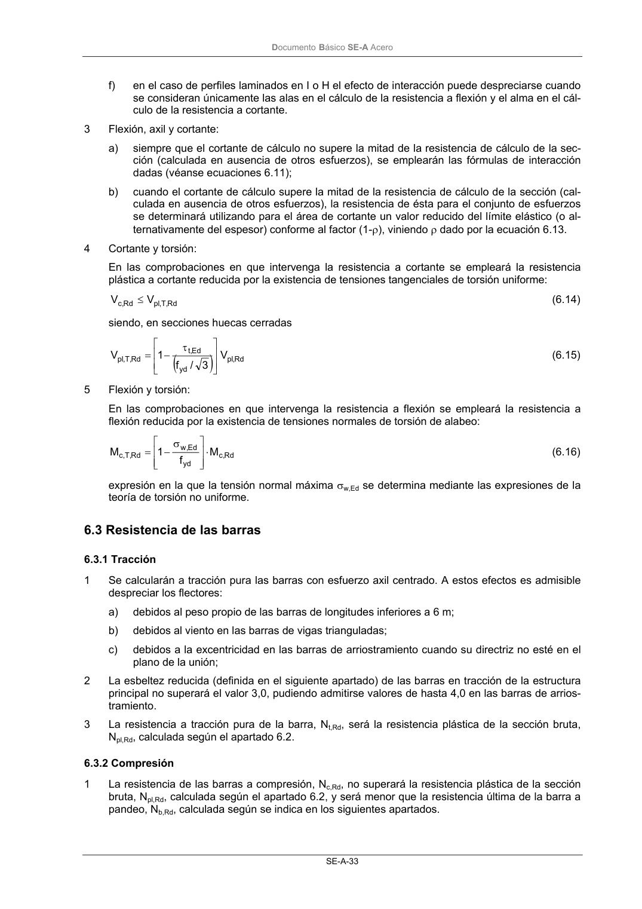

DB-SE-A · Fragmento de PDF p35 · versión 2007-10-23 · capa oficial
Formatos: JSON compacto · Markdown · PDF fuente
Ámbito del documento · texto del ámbito · documento y tablas
ID técnico a0063 · PDF pág. 35 · jerarquía no validada por persona · no es capítulo: sin_linea_de_encabezado · padre: raíz · literal original en el contenido: «( )»
( ) ) Rd , pl yd Ed ,t Rd , T , pl V 3 / f 1 V τ − = (6.15) 5 Flexión y torsión: En las comprobaciones en que intervenga la resistencia a flexión se empleará la resistencia a flexión reducida por la existencia de tensiones normales de torsión de alabeo: Rd ,c yd Ed , w Rd , T ,c M f 1 M ⋅ σ − = (6.16) expresión en la que la tensión normal máxima σw,Ed se determina mediante las expresiones de la teoría de torsión no uniforme.

PDF fuente redistribuible: copia fiel enlazada en esta página (SHA256 verificado).